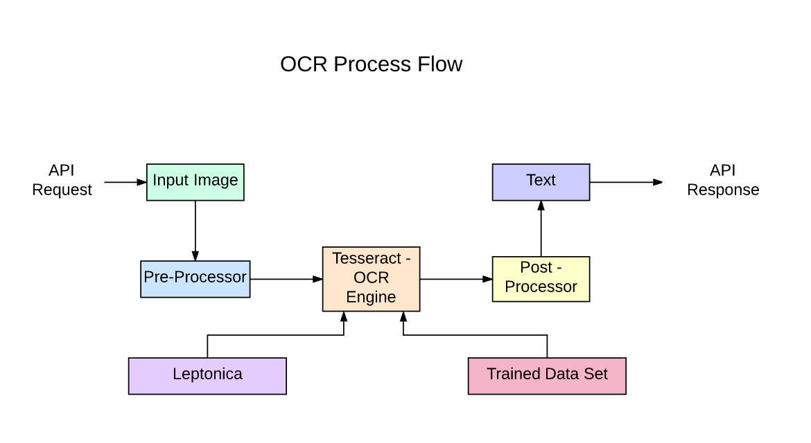

Scalable OCR API Service
I used Google’s Tesseract OCR tool with a Python wrapper to detect and identify text in ID cards for multiple languages (Latin, Devanagari and Dravidian scripts). I used OpenCV to detect the ID card borders and get the coordinates of the text boxes. All this came together in an API accessible microservice with stable JSON output. Response times for multiple concurrent calls would average between 0.5 – 1.2 seconds for this service.
Below is a diagram illustrating the pipeline utillized in realizing the complex application of this open source OCR tool
